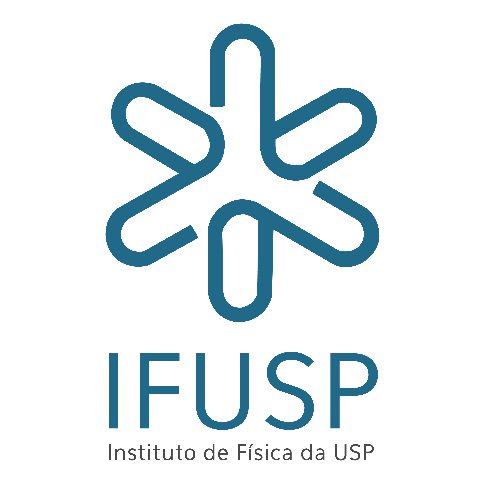
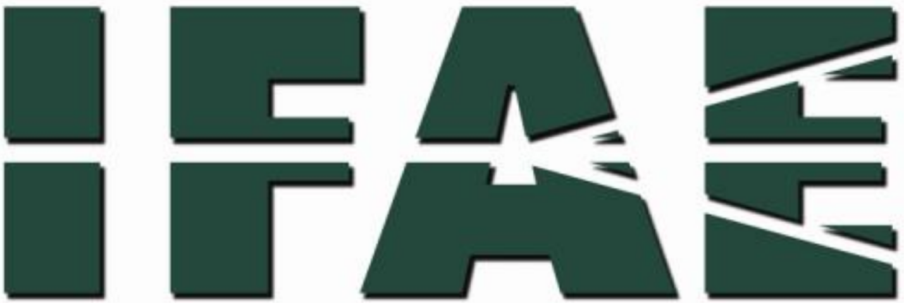
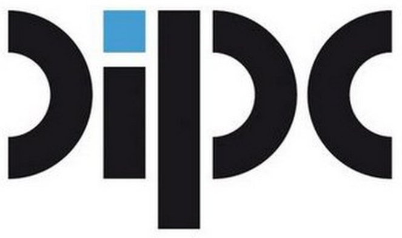
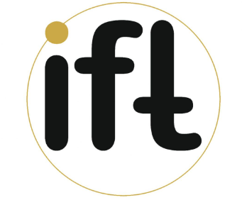
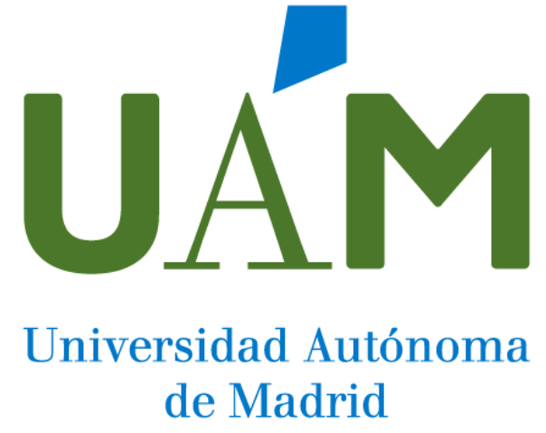

ACADEMIC APPOINTMENTS

11/24 – Present
FAPESP Postdoctoral Research Fellow
Institute of Physics, University of São Paulo (IFUSP) · São Paulo, Brazil
Supervisor: Prof. Luis Raul Weber Abramo.
Topics: cosmological simulations, semi-supervised machine learning techniques , research/teaching: Lyman-α processes, differential geometry.

02/26 – 06/26
FAPESP-BEPE Visiting Postdoctoral Research Fellow
Institut de Física d’Altes Energies (IFAE) · Cerdanyola del Vallès / Barcelona, Spain
Host supervisor: Prof. Andreu Font-Ribera. Co-mentor: Dr. Jonás Chaves-Montero.
Project: SkewerJAX: fast Ly-α skewers and a survey-ready metal-contamination model.
EDUCATION

09/20 – 09/24
PhD in Astrophysics
Donostia International Physics Center (DIPC) / Universidad Autónoma de Madrid (UAM) · Donostia-San Sebastián / Madrid, Spain
Supervisor: Prof. Raúl E. Angulo. PhD programme in Astrophysics at UAM.
Thesis: “Improving cosmological simulations: semi-analytic models, the internal structure of haloes, and machine learning techniques”.
Topics: N-body simulations, structure formation & machine learning , simulation based inference , emulators (BACCO ).

09/19 – 07/20
MSc in Theoretical Physics
Institute of Theoretical Physics IFT UAM-CSIC · Madrid, Spain
Specialisation in Astrophysics and Physics of the Cosmos. Supervisor: Prof. Alexander Knebe.
Thesis: “UNITSIM-Galaxies: data release and clustering of emission-line galaxies”.

09/15 – 07/19
BSc in Physics
Universidad Autónoma de Madrid · Madrid, Spain
Theoretical thesis: “UNIT-SAGE galaxies: studying galaxy statistics using cosmological simulations”. Supervisor: Prof. Alexander Knebe.
Experimental thesis: “Tight-binding method and evolutionary algorithms”. Supervisor: Prof. Juan José Palacios Burgos.
ADDITIONAL R&D / INDUSTRY EXPERIENCE
04/19 – 07/19
R&D Software Developer Intern, GNSS
GMV · Tres Cantos, Madrid, Spain
Global Navigation Satellite Systems department.
Topics: Python development for precise point positioning data analysis and scientific software workflows.
RESEARCH GRANTS AND FELLOWSHIPS
FAPESP Postdoctoral Fellowship
11/2024 – 03/2027
São Paulo Research Foundation (FAPESP), Brazil. Process: 2024/05768-9 (renewed in 2025).
Project: Connecting galaxies and dark-matter haloes. Hosted at IFUSP.
FAPESP-BEPE Fellowship for Research Internship Abroad
02/2026 – 06/2026
São Paulo Research Foundation (FAPESP), Brazil. Process: 2025/24623-4.
Project: SkewerJAX: fast Ly-α skewers and a survey-ready metal-contamination model. Hosted at IFAE, Barcelona.
Supervision
Supervised MSc students
2024–2026
Co-advisor V. R. Soares da Silva · MSc, IFUSP, Brazil, with Prof. L. R. Abramo
Completed (10/2024–07/2026). High-column-density absorbers in the Ly-α forest. Resulting paper: arXiv:2609.19235 .
Supervised PhD students
2026–now
Co-advisor V. R. Soares da Silva · PhD, IFUSP, Brazil, with Prof. L. R. Abramo
Ongoing (08/2026–present). High-column-density absorbers in the Ly-α forest.
Teaching
2026
Instructor From Differential Geometry to GR · 09–10/2026 · IFUSP
Graduate course, 3 credits (18 h lectures + 9 h practical). Open lecture notes with Python figures, animations and exercises .
2026
Instructor Neural Networks: Applications in Physics · 07/2026 · 1st IFUSP Winter School
4 lectures of 1.5 h: ML foundations and hands-on sessions.
2026
Notes/code Notes on the Ly-α forest in cosmology · open teaching material
Skewer generation, optical depth, transmitted flux, velocity-space mapping and metal lines, with JAX code .
Talks, Seminars & Conferences
2026
Flash-talk New Frontiers in Cosmology · 08/2026 · A Coruña, Spain
2026
Seminar DFT & CIAFF / DeCAF Seminar · 02/2026 · UAM, Madrid
2025
Seminar J-PAS Collaboration Seminar · 12/2025 · online
2025
Invited AstroInfo Meeting · 11/2025 · online
2025
Invited WEAVE Collaboration Meeting · 09/2025 · Univ. Milano-Bicocca, Italy
2025
Seminar IFAE Seminar · 04/2025 · IFAE, Barcelona
2024
Attended Fundamental Physics Meets Current and Future Facilities in Cosmology · 12/2024 · ICTP-SAIFR, São Paulo
2024
Invited São Paulo Group Meetings in Astro & Cosmo · 11/2024 · IFT-UNESP / Principia
2024
Invited Agorá Meeting DFMA · 10/2024 · IFUSP, São Paulo
2024
Attended ML4ASTRO2: International Conference on Machine Learning for Astrophysics · 07/2024 · Univ. of Catania, Italy
2023
Seminar University of Vienna Seminar · 12/2023 · Univ. of Vienna, Austria
2023
Poster Cosmic Connections: ML × Astrophysics Symposium · 05/2023 · Flatiron Institute, New York
2023
Contributed Cosmology with the Large-Scale Structure of the Universe · 05/2023 · DIPC, Donostia
2022
Contributed VIII Meeting on Fundamental Cosmology · 11/2022 · IAA, Granada
2021
Contributed 18th MultiDark Consolider Workshop · 10/2021 · UNIA, Spain
Observing Experience
2020
Observing Calar Alto Observatory, CAHA-CAFOS · 02/2020 · Almería, Spain
Optical follow-up of GRB 200215A ; spectroscopy and photometry of Arp 269.
Research Visits
2023
Visit Center for Computational Mathematics, Flatiron Institute · 07–08/2023 · Simons Foundation, New York
2022
Program MIAPbP: Advances in Cosmology through Numerical Simulations · 05–06/2022 · Garching, Germany
Computational & Technical Skills
- Programming
- Python, C, C++, Fortran, Unix shell / Bash, MATLAB.
- Scientific Python & machine learning
- JAX, PyTorch, TensorFlow/Keras, NumPy, SciPy, Pandas, Matplotlib, scikit-learn, Weights & Biases.
- Cosmological simulations & survey modelling
- N-body simulations, Gadget/L-Gadget, mock-catalogue construction, synthetic observables, Ly-α skewer generation, photometric and spectroscopic survey data.
- HPC & reproducibility
- Linux, SLURM, HTCondor, MPI workflows, OpenMP parallelisation, Git/GitHub, Jupyter, LaTeX.
Professional Training
2025
School 8th ICE Summer School · 06/2025 · ICE-CSIC, Barcelona
2023
Course TensorFlow Specialization: Custom Models, Layers, and Loss Functions · Coursera
2021
Course Machine Learning · Coursera
2021
Training Scientific Writing and Presentation · IAA, online
2020
School XV Spanish Virtual Observatory School · UAM, Madrid
Outreach & Public Engagement
2021–2024
Outreach Meet a Scientist: “Encuentro de vidas científicas” · four editions · Eureka! Zientzia Museoa
2023
Guide STROM – Inclusive Astronomy exhibition · 10/2023 · Tabakalera, Donostia
2022
Outreach Scientific monologues: Bestiario Estelar and Las galaxias que vemos y que nunca alcanzaremos · 11/2022 · Zientzia Club & Zientzia Astea UPV/EHU
2021
Outreach Scale Up Your World: “Escala tu mundo” · 11/2021 · Tabakalera, Donostia
Languages
Spanish: native · English: fluent (C2) · Portuguese: working proficiency, including lecturing.
PUBLICATIONS
PUBLICATIONS
- 7in total
- 6refereed
- 3first author
- 2second author
IMPACT · GOOGLE SCHOLAR, OCT 2026
Refereed journal articles
1
2026 First author
J-PAS: Semisupervised Sim-to-Obs Transfer for Robust Star–Galaxy–Quasar Classification
D. López-Cano, L. R. Abramo, L. Nakazono, I. Pérez-Ràfols, et al.
ApJ 1008, 189
A classifier pre-trained on millions of simulated spectra and adapted to real J-PAS data with a small labelled subset, outperforming both simulation-only and data-only training.
2
2026 Co-author
OJALÁ: Optimizing J-PAS Astronomy for Large-scale Analysis. A transformer-based model for source classification and physical-parameter inference
G. Martínez-Solaeche, R. M. González Delgado, R. García-Benito, …, D. López-Cano, et al.
A&A, in press
Transformer-based model for the spectral energy distributions of J-PAS galaxies, quasars and stars, used for classification and physical-parameter inference.
3
2024 First author
Characterizing structure formation through instance segmentation
D. López-Cano, J. Stücker, M. Pellejero Ibáñez, R. E. Angulo, D. Franco-Barranco
A&A 685, A37
Protohalo formation recast as 3D instance segmentation of the initial conditions, recovering halo masses object by object above 1012 h−1 M⊙.
4
2024 Co-author
An improved halo occupation distribution prescription from UNITsim Hα emission-line galaxies: conformity and modified radial profile
G. Reyes-Peraza, S. Avila, V. Gonzalez-Perez, D. López-Cano, A. Knebe, S. Ramakrishnan, G. Yepes
MNRAS 529, 3877–3893
An HOD for Hα emitters including conformity and a modified radial profile of satellites.
5
2022 First author
The cosmology dependence of the concentration–mass–redshift relation
D. López-Cano, R. E. Angulo, A. D. Ludlow, M. Zennaro, S. Contreras, J. Chaves-Montero, G. Aricò
MNRAS 517, 2000–2011
A model predicting halo concentrations as a function of mass, redshift and cosmology, now used in cosmology-rescaling algorithms.
6
2022 Second author
UNITSIM-Galaxies: data release and clustering of emission-line galaxies
A. Knebe, D. López-Cano, S. Avila, G. Favole, A. R. H. Stevens, V. Gonzalez-Perez, G. Reyes-Peraza, G. Yepes, C.-H. Chuang, F.-S. Kitaura
MNRAS 510, 5392–5407
Semi-analytic galaxy catalogues on the UNITSIM simulations, with Hα emitters for Euclid-like samples and their clustering.
Submitted
7
2026 Second author
Where the Forest Goes Dark: Halo-centered Characterization of High Column Density Systems with IllustrisTNG
V. R. Soares da Silva, D. López-Cano, L. R. Abramo, J. Chaves-Montero, F. Maion
arXiv:2609.19235 To be submitted to ApJ
Spectral imprint of high-column-density absorbers on the Lyα forest, characterised around their host haloes. First paper of the MSc thesis of V. R. Soares da Silva, which I co-supervised.